Chondrichthyes is a class of jawed fish whose skeletons are primarily composed of cartilage rather than bone. They are aquatic vertebrates and include sharks, rays, skates, and chimaeras.
Members of this class are characterized by paired fins, paired nares, placoid scales, a conus arteriosus in the heart, and the absence of opercula and swim bladders.
Cartilaginous skeleton: The internal skeleton is made of cartilage, which is lighter and more flexible than bone.
Paired fins: Pectoral and pelvic fins occur in pairs, allowing improved maneuverability in water.
Paired nares: Two nostrils used for chemoreception rather than breathing.
Placoid scales: Tooth-like dermal denticles that reduce drag and protect the skin.
Conus arteriosus: A muscular chamber of the heart that helps regulate blood flow leaving the ventricle.
Lack of opercula: Gills are not covered by a bony flap; instead, multiple gill slits are exposed.
No swim bladder: Buoyancy is maintained using large oily livers and dynamic lift from fins.
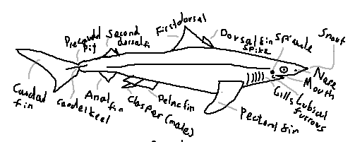
Caudal region: The posterior part of the shark’s body, extending from the anal fin to the tail, providing most of the propulsive force.
Caudal fin: The tail fin, typically heterocercal, with a larger upper lobe that provides lift and forward thrust.
Caudal keel: A lateral ridge at the base of the caudal fin that stabilizes swimming and reduces drag.
Precaudal pit: A small depression just anterior to the caudal fin that improves hydrodynamic efficiency.
Anal fin: A ventral fin located posterior to the pelvic fins; absent in some shark groups.
Dorsal fin: A median fin on the back that provides stability and prevents rolling.
First dorsal fin: The anterior dorsal fin, usually larger and more rigid.
Second dorsal fin: The posterior dorsal fin, generally smaller and sometimes bearing a spine.
Dorsal fin spine / spike: A stiff, often venomous spine present in some species for defense.
Pelvic fin: A paired ventral fin used for stabilization and maneuvering.
Clasper: A paired copulatory organ found in male sharks, modified from the pelvic fins.
Pectoral fin: A paired fin behind the gills that provides lift, steering, and braking.
Gills: Respiratory organs that extract oxygen from water.
Gill opening: External openings of the gills; sharks typically have five to seven on each side.
Labial furrows: Grooves at the corners of the mouth that increase mouth flexibility and suction.
Nares: External nostrils used exclusively for smell, not respiration.
Snout: The anterior projection of the head, often housing electroreceptors.
Eye: Visual organ; many sharks possess a reflective layer or a nictitating membrane.
Mouth: Usually located ventrally, adapted for grasping or cutting prey.
Teeth: Replaceable, specialized structures used for feeding, arranged in multiple rows.
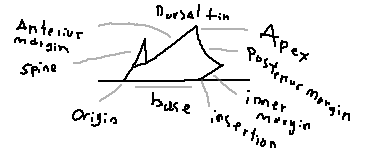
Margin: The outer edge of the dorsal fin.
Anterior margin: The leading edge of the fin that first contacts the water.
Apex: The highest point of the dorsal fin.
Posterior margin: The trailing edge of the fin.
Inner margin: The edge of the fin closest to the body.
Base: The portion of the fin attached to the body.
Origin: The anterior point where the fin begins on the body.
Insertion: The posterior point where the fin ends on the body.
Spine / spike: A rigid defensive structure present in some dorsal fins.
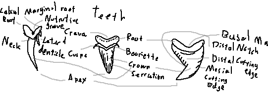
Root: The basal portion anchoring the tooth to the jaw cartilage.
Labial root: The outward-facing part of the root.
Marginal root: The lateral edges of the root that help stabilize the tooth.
Nutritive groove: A channel that supplies nutrients during tooth development.
Crevace: Small grooves or indentations on the tooth surface.
Basal margin: The lower boundary between the root and crown.
Bourrelette: A ridge at the base of the crown separating it from the root.
Cusp: The main pointed portion of the tooth.
Lateral denticle: Small side cusps flanking the main cusp.
Neck: The narrowed region between the crown and the root.
Crown: The exposed cutting portion of the tooth.
Serration: Saw-like notches along the cutting edge.
Apex: The tip of the tooth cusp.
Cutting edge: The sharp edge used to slice prey.
Distal cutting edge: The edge facing away from the midline of the jaw.
Mesial cutting edge: The edge facing toward the midline of the jaw.
Distal notch: An indentation near the distal edge of the crown.
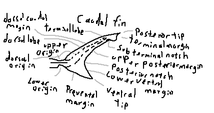
Dorsal caudal margin: The upper edge of the caudal fin extending from the dorsal origin toward the terminal lobe.
Dorsal lobe: The upper lobe of a heterocercal tail, usually larger and providing lift.
Terminal lobe: The distal tip of the dorsal lobe, often separated by a subterminal notch.
Upper origin: The point where the dorsal lobe begins on the caudal peduncle.
Dorsal origin: The anterior attachment of the dorsal caudal margin to the body.
Lower origin: The point where the ventral lobe begins.
Preventral margin: The anterior margin of the ventral lobe extending toward the ventral tip.
Ventral tip: The lowest point of the caudal fin.
Lower ventral margin: The trailing edge of the ventral lobe.
Posterior notch: A concave indentation separating lobes or margins of the caudal fin.
Upper posterior margin: The trailing edge of the dorsal lobe.
Subterminal notch: A notch separating the terminal lobe from the rest of the dorsal lobe.
Terminal margin: The outermost edge of the terminal lobe.
Posterior tip: The rearmost extremity of the caudal fin.
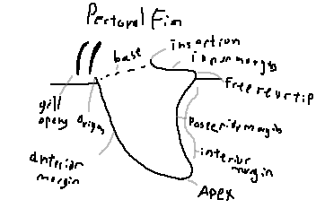
Origin: The anterior attachment point of the pectoral fin to the body.
Anterior margin: The leading edge of the fin.
Insertion: The posterior attachment of the fin to the body wall.
Inner margin: The margin closest to the body.
Free rear tip: The posterior tip not attached to the body.
Posterior margin: The trailing edge of the fin.
Interior margin: The inward-facing margin forming the fin’s base contour.
Apex: The point of maximum extension of the pectoral fin.
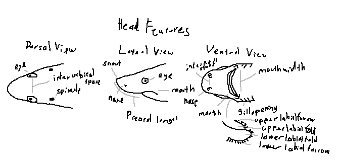
Eye: Positioned dorsolaterally, allowing wide visual coverage.
Interorbital space: The distance between the eyes across the top of the head.
Spiracle: A small opening behind the eye used for respiration in benthic species.
Eye: Often round, elliptical, or slit-shaped depending on species.
Snout: The anterior projection of the head, varying in length and shape.
Nares: External nostrils used for olfaction.
Preoral length: The distance from the snout tip to the mouth opening.
Mouth: Positioned ventrally or subterminally.
Gill openings: Slits located laterally on the ventral surface of the head.
Internasal space: The distance between the paired nares.
Nares: Each nostril typically divided into incurrent and excurrent openings.
Mouth: The feeding opening; shape varies by diet.
Upper labial furrow: A groove extending from the upper jaw corner.
Upper labial fold: A flap of tissue aiding mouth expansion.
Lower labial fold: A ventral fold supporting suction feeding.
Lower labial furrow: A groove beneath the lower jaw corner.
Mouth width: The transverse distance across the mouth opening.
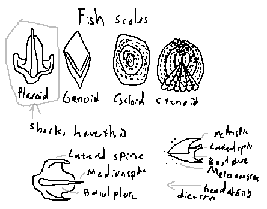
Scale: Small dermal structures covering the skin of most fish; in sharks, these are modified into placoid scales.
Placoid (dermal denticles): Tooth-like scales that reduce drag, protect against parasites, and aid in hydrodynamics. This term is stressed for sharks due to their unique evolution.
Lateral spine: A lateral projection of the placoid scale along the body, providing abrasion resistance.
Median spine: The central, often pointed ridge of the scale.
Basal plate: The part of the scale embedded in the dermis, anchoring it firmly to the skin.
Melanocytes: Pigment cells in the scale that contribute to coloration and UV protection.
Backwards-directed spines: The tip of the scale points posteriorly, reducing friction and deterring predators.
Ganoid: Thick, enamel-like scales typical of primitive bony fish.
Cycloid: Thin, smooth, circular scales found in some teleosts.
Ctenoid: Rough, comb-like scales with posterior projections, typical of higher teleosts.
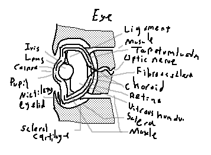
Iris: Colored, contractile structure that regulates the amount of light entering the eye.
Lens: Transparent, flexible structure that focuses light onto the retina.
Cornea: Clear anterior layer allowing light entry; in sharks, contributes less to focusing than the lens.
Pupil: Opening in the iris controlling light entry; can contract or dilate depending on ambient light.
Ciliary eyelid: Movable eyelid protecting the eye in some shark species.
Scleral cartilage: A supportive cartilaginous ring within the eye, maintaining shape.
Sclera: Tough outer layer surrounding the eyeball, continuous with cornea and protective tissue.
Muscle (lens-retina): Intrinsic muscles adjusting lens curvature for focusing.
Muscles that hold the eye: Extrinsic ocular muscles controlling eye movement.
Vitreous humour: Clear, gelatinous substance filling the interior of the eye and maintaining shape.
Retina: Photosensitive layer detecting light and transmitting visual signals to the brain.
Choroid: Vascular layer supplying nutrients and oxygen to the retina.
Fibrous sclera: Dense connective tissue forming the tough outer shell of the eyeball.
Optic nerve: Transmits visual information from the retina to the brain.
Tapetum lucidum: Reflective layer behind the retina enhancing low-light vision.
Ligament: Suspensory structures stabilizing the lens and other eye components.
| Subclass | Description |
|---|---|
| Elasmobranchii | Sharks, rays, and skates |
| Holocephali | Chimaeras (ghost sharks) |
Elasmobranchii includes sharks, rays, and skates. They generally have multiple gill slits, placoid scales, and replaceable teeth.
| Order | Common Name | Illustration |
|---|---|---|
| Carcharhiniformes | Ground sharks | 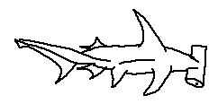 |
| Heterodontiformes | Bullhead sharks | 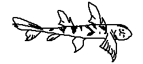 |
| Lamniformes | Mackerel sharks | 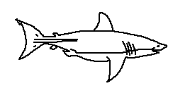 |
| Orectolobiformes | Carpet sharks | 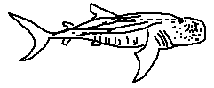 |
| Order | Common Name | Illustration |
|---|---|---|
| Hexanchiformes | Frilled and cow sharks | 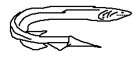 |
| Pristiophoriformes | Sawsharks | 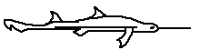 |
| Squaliformes | Dogfish sharks | 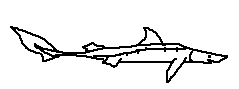 |
| Squatiniformes | Angel sharks | 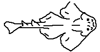 |
Sawsharks are small to medium-sized elasmobranchs belonging to the order Pristiophoriformes. They are instantly recognizable by their elongated, dorsoventrally flattened rostrum, which is armed with sharp lateral teeth and accompanied by a distinctive pair of long barbels positioned roughly midway along the snout.
Unlike sawfishes (which are rays), sawsharks are true sharks, retaining a cylindrical body form, lateral gill openings, and typical shark-like swimming mechanics.
They are primarily benthic predators inhabiting continental shelves and upper continental slopes, ranging from shallow coastal waters to depths exceeding 500 meters, depending on species.
Rostrum: Long, narrow, and laterally toothed; functions as a multi-purpose sensory and hunting tool. The rostrum is used to detect prey via electroreception, to stun prey through lateral slashing motions, and to manipulate sediment.
Barbels: A pair of elongated sensory appendages located approximately midway along the rostrum. These are rich in mechanoreceptors and electroreceptors, allowing precise localization of buried or cryptic prey.
Dorsal fins: Two dorsal fins are present, typically similar in size and positioned posteriorly on the body.
Anal fin: Completely absent, a key diagnostic feature distinguishing sawsharks from many other shark orders.
Ampullae of Lorenzini: Highly developed electroreceptive organs concentrated along the rostrum, barbels, and head, providing exceptional sensitivity to weak bioelectric fields produced by prey.
Gill openings: Five lateral gill slits in most species (six in Pliotrema), confirming their placement among true sharks rather than batoids.
Teeth: Rostral teeth alternate between large and small elements and are replaceable. Oral teeth are small, uniform, and adapted for gripping rather than cutting.
Size at birth: Pups are born at approximately 30 cm total length and are fully independent at birth.
Sawsharks feed primarily on:
Squids, bony fishes, and crustaceans, especially benthic or demersal species.
During hunting, the shark sweeps its rostrum side-to-side in rapid lateral motions, striking and disabling prey before consuming it. Electroreception plays a central role in prey detection, particularly in low-light or deep-water environments.
The genus Pliotrema is unique among sawsharks in possessing six pairs of gill openings rather than five. This feature is considered either a retained primitive trait or a secondary specialization.
Species of Pliotrema are unique among sawsharks in possessing six pairs of gill openings, a trait otherwise unknown within Pristiophoriformes. They generally exhibit a slender, elongate body, a narrow rostrum with fine lateral teeth, and a preference for deeper shelf and slope habitats, often beyond the depth ranges of Pristiophorus species.
Pliotrema annae is a relatively small and slender sawshark characterized by its six gill slits, narrow rostrum, and fine, closely spaced rostral teeth. The barbels are proportionally long and positioned well anterior to the mouth, suggesting a strong reliance on electroreception when foraging. This species has a restricted geographic range, and its morphology indicates adaptation to deep benthic environments where precise prey detection is critical.
Defining features:
• Six gill slits
• Slender rostrum with fine, closely spaced teeth
• Restricted geographic distribution
Pliotrema kajae is distinguished by its elongated barbels, narrow head profile, and an especially slender rostrum, which enhances sensitivity to weak bioelectric fields. It is primarily a deep-water species, inhabiting continental slopes where light penetration is minimal. The body form suggests a slow-moving, ambush-oriented predator specializing in small benthic fishes and invertebrates.
Defining features:
• Elongated, flexible barbels
• Narrow head and body profile
• Primarily deep-water habitat

Among Pliotrema species, Pliotrema warreni is the most robust, possessing a broader rostrum, thicker body, and more widely spaced rostral teeth. Endemic to southern African waters, it occupies both shelf and upper slope habitats. Its more powerful build suggests a greater reliance on mechanical stunning of prey using lateral rostral strikes.
Defining features:
• More robust body form
• Broader and heavier rostrum
• Endemic to southern African waters

Pristiophorus is the more speciose and widely distributed genus of sawsharks, characterized by the presence of five gill slits and a wide range of rostrum shapes and habitat depths.
The genus Pristiophorus represents the more diverse and widespread lineage of sawsharks, defined by the presence of five lateral gill slits, a wide range of rostrum shapes, and occupancy of habitats ranging from shallow coastal zones to deep continental slopes. Species within this genus show considerable variation in rostral length, tooth spacing, and barbel placement.
Pristiophorus cirratus is a relatively shallow-water species characterized by a shorter, broader rostrum and well-developed barbels. It is commonly found on continental shelves, where it forages over sandy and muddy substrates. Compared to deep-water relatives, it exhibits a more active swimming behavior and a slightly more robust body.
Defining features:
• Relatively short rostrum
• Shallow coastal distribution
• Well-developed barbels

Pristiophorus delicatus is an extremely slender species adapted to deep continental slope environments. It possesses a very narrow rostrum with fine, closely spaced lateral teeth, optimized for detecting and disabling small, soft-bodied prey. Its delicate morphology suggests a low-energy lifestyle typical of deep-water benthic predators.
Defining features:
• Extremely slender rostrum
• Fine, closely packed rostral teeth
• Deep continental slope species

Pristiophorus japonicus is distinguished by its broader head, robust dorsal fins, and relatively thick body, indicating a more powerful swimming capability. Found primarily in the western Pacific, this species occupies a range of depths and is known to prey on a variety of benthic fishes and cephalopods.
Defining features:
• Relatively broad head
• Western Pacific distribution
• Robust dorsal fins

A recently described species, Pristiophorus lanae is notable for its elongated rostrum and distinct barbel placement, which differs subtly from closely related taxa. Its discovery highlights the cryptic diversity of deep-water sawsharks. The species is believed to inhabit upper slope environments, where specialized sensory adaptations are advantageous.
Defining features:
• Recently described species
• Elongated, narrow rostrum
• Distinctive barbel placement

Pristiophorus nancyae exhibits a slender body, narrow snout, and relatively long rostrum, traits associated with precise prey detection in deep benthic habitats. It is distributed in the eastern Pacific, where it occupies slope regions and likely feeds on small demersal fishes and crustaceans.
Defining features:
• Slender body form
• Narrow, elongated snout
• Eastern Pacific distribution

This species is recognized by its smooth fin surfaces, reduced fin margins, and streamlined appearance. Pristiophorus nudipinnis is a southern hemisphere species, adapted to cooler waters. Its morphology suggests efficient, low-drag movement close to the seafloor.
Defining features:
• Reduced fin margins
• Smooth fin surfaces
• Southern Hemisphere distribution

Pristiophorus schroederi is an Atlantic species characterized by a moderately long rostrum, well-spaced rostral teeth, and a balanced body form intermediate between shallow- and deep-water species. It occupies continental slope habitats and demonstrates flexible feeding behavior across multiple prey types.
Defining features:
• Atlantic distribution
• Moderately long rostrum
• Well-spaced rostral teeth

| Feature | Sawsharks | Sawfishes |
|---|---|---|
| Gill openings | Lateral | Ventral |
| Barbels | Present | Absent |
| Rostral teeth | Alternating large and small | Uniform size |
| Body size | Small to medium | Very large |
| Anal fin | Absent | Present |
| Order | Common Name | Illustration |
|---|---|---|
| Myliobatiformes | Stingrays and relatives | 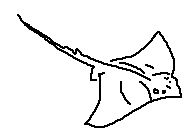 |
| Rhinopristiformes | Sawfishes and rhino rays | 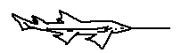 |
| Rajiformes | Skates and guitarfishes | 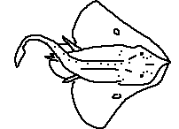 |
| Torpediniformes | Electric rays | 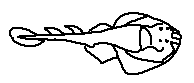 |
The order Rhinopristiformes includes a diverse assemblage of ray-like elasmobranchs that bridge the morphological gap between sharks and batoids. Members of this order possess a flattened body, enlarged pectoral fins fused to the head, and a generally shark-like tail. Many species are among the most threatened marine fishes due to coastal habitat loss and fisheries pressure.
Trygonorrhinids are small to medium-sized benthic rays with a relatively narrow head, shovel-shaped snout, and well-defined shark-like tail. They are primarily coastal species, inhabiting sandy and muddy substrates.
Species of Aptychotrema are characterized by a narrow snout, small eyes, and a slender body adapted for shallow continental shelf habitats. They typically reach lengths of 90–120 cm and are found at depths of 5–100 m, primarily in Australian waters.
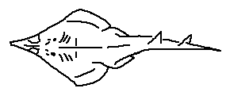
Trygonorrhina species possess a broader head and more rounded snout compared to other shovelnose rays. They inhabit temperate coastal waters of southern Australia, reaching sizes of up to 150 cm and occurring mainly at depths shallower than 80 m.
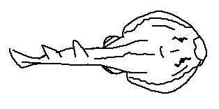
The genus Zapteryx occurs in the eastern Pacific and western Atlantic. These rays have a robust body, elongated snout, and strong dorsal fins. They typically reach 100–130 cm and inhabit sandy bottoms from 10–200 m.
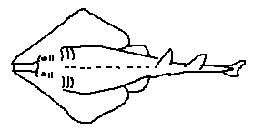
Rhinobatids are classic guitarfishes with a triangular head, elongated body, and strong swimming ability. They occupy shallow coastal waters and estuaries and are often encountered on sandy bottoms.
Acroteriobatus species are Indo-West Pacific guitarfishes with a pointed snout and relatively small disc. Most species grow to 90–120 cm and inhabit shallow waters from the surf zone to 100 m.
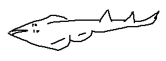
Pseudobatos includes New World guitarfishes found in the eastern Pacific and western Atlantic. These species often exceed 120 cm in length and frequent bays, estuaries, and coastal shelves to depths of 70 m.
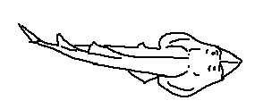
The genus Rhinobatos contains several widespread coastal guitarfishes. They are characterized by a pointed rostrum and robust tail, reaching lengths of 150 cm and typically inhabiting depths of 5–150 m.
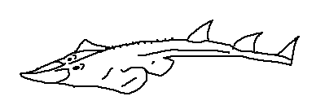
Wedgefishes are among the largest members of Rhinopristiformes, possessing a thick, wedge-shaped head, massive body, and powerful tail. They are slow-growing and highly vulnerable to overfishing.
The bowmouth guitarfish, Rhina ancylostoma, is unmistakable due to its broad, blunt snout and white-spotted dorsal pattern. It can exceed 300 cm in length and inhabits shallow tropical waters to about 70 m across the Indo-West Pacific.

Species of Rhynchobatus are large wedgefishes with pointed snouts and distinctive white dorsal spots. Many species exceed 250 cm and inhabit coastal shelves and coral-associated sandy habitats from 5–100 m.
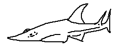
This rare Atlantic wedgefish is known only from limited records off West Africa. It exhibits a narrow head and elongated body and likely reaches lengths over 200 cm, inhabiting continental shelf depths.

Glaucostegus species are large-bodied guitarfishes with broad heads, smooth dorsal surfaces, and strong swimming ability. Most species exceed 250 cm and inhabit shallow coastal waters.
Species overview (short descriptions):
Glaucostegus cemiculus – Up to 260 cm; eastern Atlantic and Mediterranean; sandy coastal waters.
Glaucostegus granulatus – Slender snout; Indo-West Pacific; to 230 cm.
Glaucostegus halavi – Broad-headed form; western Indian Ocean.
Glaucostegus microphthalmus – Small eyes; eastern Atlantic; coastal shelves.
Glaucostegus obtusus – Wide snout; Indo-Pacific; shallow bays.
Glaucostegus spinosus – Spiny dorsal denticles; western Indian Ocean.
Glaucostegus thouin – Club-shaped snout; Indo-Pacific region.
Glaucostegus typus – Giant guitarfish; exceeds 300 cm; Indo-West Pacific.
Glaucostegus younholeei – Recently described Bangladeshi species; Bay of Bengal.

Sawfishes are iconic elasmobranchs defined by a long, flattened rostrum armed with large lateral teeth. They inhabit coastal, estuarine, and freshwater systems and are among the most endangered fishes on Earth.
The narrow sawfish, Anoxypristis cuspidata, has a slender saw with teeth restricted to the distal half. It reaches lengths of 350 cm and occurs in Indo-West Pacific coastal waters to depths of 40 m.

The dwarf sawfish reaches about 300 cm and inhabits northern Australian coastal waters, estuaries, and rivers.

The smalltooth sawfish is a large species reaching 500–550 cm, formerly distributed throughout the Atlantic and Caribbean in coastal and estuarine habitats.

The green sawfish is among the longest species, exceeding 600 cm, and inhabits Indo-West Pacific coastal and estuarine waters.

The largetooth sawfish occupies marine, estuarine, and freshwater habitats and reaches lengths over 600 cm. It has one of the broadest habitat ranges of any elasmobranch.

Torpediniformes are a specialized order of batoid elasmobranchs commonly known as electric rays. They are characterized by the presence of paired electric organs capable of generating strong bioelectric discharges used for prey capture, defense, and possibly communication.
Electric rays are dorsoventrally flattened, with pectoral fins fused to the head to form a broad, circular or subcircular disc. This disc, combined with a soft, flexible body, allows the fish to partially bury itself in sediment while leaving only the eyes and spiracles exposed. The tail is typically short and robust, with dorsal and caudal fins reduced or absent in many families. This morphology enhances stability on the substrate and reduces energy expenditure during ambush predation.
Morphologically, electric rays possess a rounded to oval pectoral disc, a short, thick tail, reduced or absent caudal fins, and a soft-bodied, flaccid appearance compared to other batoids.
Disc: Formed by greatly expanded pectoral fins fused to the head, typically circular or subcircular in outline.
Skin: Smooth, lacking dermal denticles in most species, contributing to their soft texture.
Eyes: Small to moderate in size, positioned dorsally.
Spiracles: Large and well developed, allowing respiration while buried.
Mouth: Ventral, small, with weakly developed teeth adapted for soft prey.
Tail: Short and thick; dorsal fins may be reduced or absent depending on family.
The defining feature of Torpediniformes is the presence of large paired electric organs, derived evolutionarily from modified branchial musculature.
Electric organ structure:
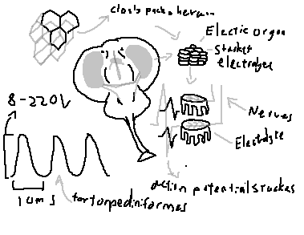
• Each organ consists of thousands of electrocytes
• Electrocytes are arranged in vertical columns
• Each electrocyte functions analogously to a biological battery
Electrocytes: Flattened, polygonal cells arranged in tightly packed hexagonal arrays, maximizing packing efficiency and voltage output.
Stacked electrolytes: Electrocytes are stacked in series; voltages sum additively, while parallel stacks increase current.
Innervation: Each electrocyte is innervated on one face by cholinergic motor neurons.
Neural activation:
• Action potentials arrive nearly simultaneously
• Synchronous depolarization occurs
• Individual voltages summate across the stack
Discharge characteristics:
• Voltage range: approximately 8–220 V
• Pulse duration: ~10 milliseconds
• Pulses can be delivered in rapid succession
The result is a powerful, short-duration electric shock capable of stunning or immobilizing prey.
Habitat: Mostly benthic, inhabiting sandy or muddy substrates from shallow coastal waters to deep continental slopes.
Burrowing behavior: Electric rays frequently bury themselves with only eyes and spiracles exposed.
Diet:
• Teleost fishes
• Small elasmobranchs
• Crustaceans
• Polychaete worms
Electric discharges are used primarily for prey capture, but also serve a defensive role against predators.
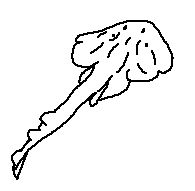
Platyrhinidae, commonly known as thornback electric rays, are considered among the more primitive representatives of electric rays. They retain several ancestral batoid features that distinguish them from more derived electric rays, making them an interesting group for studying evolutionary transitions within Torpediniformes.
Defining characteristics:
• Disc shape is rhomboidal rather than circular, providing hydrodynamic efficiency.
• Dermal denticles and thorn-like projections cover the dorsal surface, offering protection against predators.
• Electric organs are relatively weakly developed, generating low-voltage discharges primarily for communication or minor defense.
• Exhibit more active swimming compared to other electric rays, capable of short bursts of movement.
Ecologically, Platyrhinidae serve as a transitional form, bridging the morphological and functional gap between typical skates and highly specialized electric rays. Their diet primarily consists of small benthic invertebrates and fish, and they often inhabit shallow coastal regions with sandy or muddy substrates.
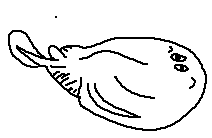
Narkidae, or sleeper rays, are small-bodied electric rays with extremely soft skin and reduced skeletal features. They are predominantly found in the Indo-Pacific region and are adapted to a cryptic lifestyle along the seabed.
Defining characteristics:
• Very small, almost circular disc, allowing them to hide effectively.
• Soft, flabby body with minimal calcification.
• Reduced tail and fins, reflecting their limited swimming activity.
• Produce low-voltage electric discharges sufficient for defense or prey immobilization.
Behaviorally, Narkidae are slow-moving, benthic ambush predators. They rely on camouflage and sudden electric shocks to capture prey such as small invertebrates. Their cryptic morphology and soft bodies reduce detectability by both predators and prey.
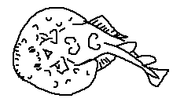
Narcinidae, or numbrays, are among the most basal and widespread electric rays. They exhibit a combination of ancestral and derived traits, making them a key group for understanding the evolution of electric organs in batoids.
Defining characteristics:
• Rounded disc, providing a stable platform for benthic life.
• Prominent electric organs visible along the pectoral fins.
• Well-developed spiracles, allowing respiration while partially buried in sediment.
• Moderate-voltage electric output used for both predation and defense.
Primarily nocturnal, numbrays feed on benthic invertebrates including worms, crustaceans, and small mollusks. They exhibit a combination of stealth and electrical stunning to subdue prey, and are commonly found in shallow coastal habitats.
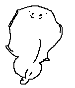
Coffin rays are large-bodied electric rays noted for their exceptionally powerful electric discharges, which can incapacitate both prey and potential threats. They inhabit deeper coastal waters and are considered top benthic predators among electric rays.
Defining characteristics:
• Massive, thick disc, allowing them to anchor firmly on the substrate.
• Highly developed electric organs capable of delivering high-voltage discharges.
• Extremely soft musculature, reflecting a sedentary ambush strategy.
• Specialized for slow-motion predation with minimal swimming effort.
Coffin rays rely almost entirely on their electric ability for both hunting and defense. They are ambush predators, lying in wait partially buried in sediment to surprise prey, which often includes small fish and invertebrates.
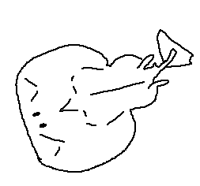
Torpedinidae comprise the classical electric rays and include some of the most powerful electric fish known to science. Members of this family are capable of generating voltages strong enough to stun relatively large prey and occasionally pose a minor threat to humans.
Defining characteristics:
• Large, nearly circular disc that maximizes electrical organ surface area.
• Short, robust tail supporting stabilization and maneuvering.
• Two dorsal fins present in many species, aiding in locomotion.
• Exceptionally well-developed electric organs capable of delivering strong defensive and predatory shocks.
Torpedinidae are sedentary ambush predators, often burying themselves in soft sediment. They use their electric discharges both defensively and offensively, enabling them to immobilize prey rapidly. Their morphology, physiology, and behavior make them the archetype of specialized electric rays.
Holocephali are deep-water cartilaginous fishes commonly known as chimaeras or ghost sharks. They differ from elasmobranchs by having a single gill opening covered by a soft operculum and fused upper jaws.
Ghost sharks can move between very deep (2000m) and relatively shallow waters (0m) largely because they lack a swim bladder. In many bony fish, the swim bladder is filled with gas, which compresses at depth and expands rapidly when the fish ascends, making sudden changes in depth dangerous or even fatal. Ghost sharks, like true sharks, avoid this problem entirely by relying on oil rich livers and dynamic lift from their fins for buoyancy instead of gas. Because oil does not expand or contract dramatically with pressure, chimaeras can tolerate large pressure changes without internal damage. This allows them to migrate vertically through the water column going deep to feed and returning to shallower waters without the physiological risks that constrain swimbladder dependent fishes.
| Order | Common Name | Illustration |
|---|---|---|
| Chimaeriformes | Chimaeras | 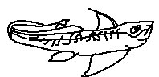 |
Holocephali, commonly known as chimaeras or ghost sharks, are a distinct subclass of cartilaginous fishes closely related to sharks but morphologically and ecologically specialized. They are primarily deep-water, benthic or benthopelagic animals.
Unlike elasmobranchs, chimaeras possess a single external gill opening covered by a soft operculum, a fused upper jaw (holostyly), and a highly developed neurocranium.
The ventral surface of chimaeras reflects their adaptation to bottom-feeding. The mouth is subterminal and adapted for crushing rather than cutting.
Gill opening: A single, operculum-covered opening on each side, distinct from the multiple gill slits of sharks.
Nares: Well-developed nostrils positioned anteriorly, often connected to grooves leading toward the mouth.
Electroreception: Chimaeras possess ampullae of Lorenzini,
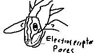
Neurocranium: The skull is large, rigid, and fused, enclosing the brain and sensory organs; this fusion is a defining trait of Holocephali.
Chimaeras are primarily durophagous, feeding on hard-shelled prey. Their diet consists mainly of:
Crustaceans: Crabs, shrimps, and other arthropods.
Ophiuroidea: Brittle stars and related echinoderms.
Molluscs: Bivalves, gastropods, and cephalopods.
Instead of replaceable teeth, chimaeras possess tooth plates that grow continuously and are specialized for crushing.
Chimaeras are oviparous. Females lay distinctive spindle-shaped egg cases with elongated tendrils. These egg cases are deposited on the seafloor and develop slowly.
Callorhinchidae, commonly known as plough-nose chimaeras, are easily recognized by their distinctive elongated and flexible rostral appendage, which they use to probe soft sediment in search of invertebrate prey. They generally inhabit shallower coastal waters compared to other chimaeras, favoring sandy or muddy substrates where benthic feeding is efficient.
Defining features:
• Prominent shovel- or club-shaped snout specialized for tactile and electroreceptive detection of buried prey
• Broad, wing-like pectoral fins for stability and slow gliding over the seabed
• Robust, muscular body adapted for benthic feeding and short bursts of movement
• Reduced lateral line visibility, with sensory emphasis on the rostrum and ampullae of Lorenzini
Callorhinchus species are active benthic feeders, often consuming crustaceans, worms, and mollusks. Their combination of sensory adaptations and body morphology allows them to efficiently forage in shallow, soft-bottom habitats.
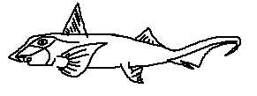
Chimaeridae, the classical ghost sharks, typically lack the elongated rostrum seen in Callorhinchidae. They are primarily deep-water species with adaptations for life in dimly lit benthic zones.
Defining features:
• Short, rounded snout suited for suction feeding
• Smooth, scaleless body surface reducing drag
• Long, tapering tail providing stability and propulsion in deep water
• Well-developed dorsal spine used defensively and possibly in intraspecific interactions
Chimaera species are slow-moving predators of benthic invertebrates, relying on stealth and specialized jaws for capturing prey in deep, low-light environments.
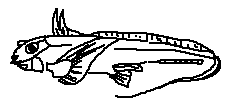
Defining features:
• More elongated and streamlined body compared to Chimaera
• Reduced prominence of the dorsal spine
• Very long, whip-like tail aiding in maneuverability
• Often exhibits bioluminescent markings in deep-sea species, likely for communication or predator deterrence
Hydrolagus species are highly adapted for deep-water benthic life. Their elongated morphology and sensory adaptations allow them to navigate and forage efficiently in complex seafloor habitats.
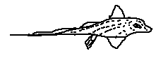
Rhinochimaeridae are deep-sea specialists known for their extremely elongated, pointed rostral structures and slender bodies. These features enhance their electroreceptive capabilities, allowing precise detection of prey in the dark depths of the ocean.
Defining features:
• Extremely elongated rostrum equipped with numerous electroreceptors
• Large, highly sensitive eyes adapted to minimal light
• Slender, ribbon-like tail for efficient swimming in open deep-sea habitats
Harriotta species occupy mid- to deep-benthic zones, preying on small invertebrates and utilizing their rostrum to detect hidden or buried prey. Their morphology reflects deep-sea evolutionary specialization.
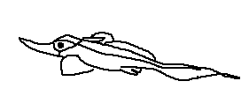
Defining features:
• Similar to Harriotta but with a slightly shorter, less extreme rostrum
• More compact neurocranium providing structural support
• Distinct fin placement and body proportions differentiating it from Harriotta
Neoharriotta species occupy similar deep-sea habitats, with adaptations that favor efficient prey detection and precise swimming in low-light environments.
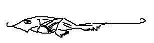
Defining features:
• Blade-like, highly elongated rostrum specialized for electroreception
• Strongly developed ampullae of Lorenzini enhancing prey detection
• Deep-sea distribution with preference for soft substrates
• Slender body and tapering tail optimized for energy-efficient movement in open benthic zones
Rhinochimaera species are active deep-sea foragers, relying heavily on their electroreceptive rostrum to locate prey in near-total darkness. Their adaptations exemplify extreme specialization among chimaeras.
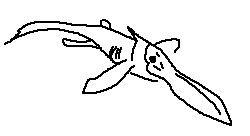
Ischyodus: One of the most widespread fossil chimaeras, known from tooth plates.
Callorhinchus (fossil representatives): Demonstrates long-term morphological stability.
Amylodon: Known from massive tooth plates, indicating extreme durophagy.
Canadodus: Early holocephalan with primitive jaw suspension traits.
Pachymylus: Thickened tooth plates suggesting specialized crushing ecology.
These extinct forms demonstrate that holocephalans once occupied a much wider range of ecological niches than they do today.